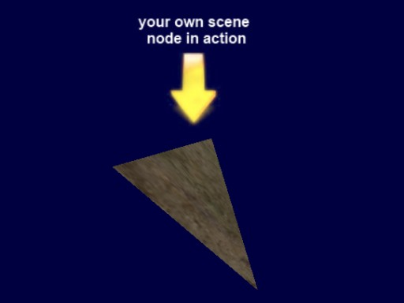

CopperLicht API Documentation
All tutorials
CopperLicht Tutorial: Custom Scene Nodes
This tutorial will show you how to create a custom scene node in order to render own 3d items, and how to use CopperLicht without the editor, CopperCube. You will also see how to load textures, use BillBoards and Cameras and how to change Materials.
The final result of this tutorial will look about like this:

A very simple 3d scene node, below a 3d billboard.
A very simple 3d scene node, below a 3d billboard.
- Show live demo of this tutorial
- Download this tutorial as zip archive.
Writing CopperLicht code
In contrast to the other tutorials, we don't need the 3d editor CopperCube at all, everything we are doing here is writing code. To keep this simple and short, the following is the full code of this example. I'll explain it in detail below.
<html>
<head>
<meta http-equiv="Content-Type" content="text/html; charset=iso-8859-1">
<script type="text/javascript" src="copperlicht.js"></script>
</head>
<body>
<div align="center">
<b>Tutorial 03: Showing how to create your own scene node.</b><br/>
<canvas id="3darea" width="640" height="480" style="background-color:#000000">
</canvas>
</div>
<script type="text/javascript">
<!--
main = function()
{
// create the 3d engine
var engine = new CL3D.CopperLicht('3darea');
if (!engine.initRenderer())
return; // this browser doesn't support WebGL
// add a new 3d scene
var scene = new CL3D.Scene();
engine.addScene(scene);
scene.setBackgroundColor(CL3D.createColor(1, 0, 0, 64));
// add our own scene node
var mynode = new MySceneNode(engine);
scene.getRootSceneNode().addChild(mynode);
mynode.addAnimator(new CL3D.AnimatorRotation(new CL3D.Vect3d(0, 0.6, 0.8)));
// add a transparent billboard scene node with a text sign
var billboard = new CL3D.BillboardSceneNode();
billboard.setSize(20,20);
billboard.Pos.Y = 30;
billboard.getMaterial(0).Tex1 = engine.getTextureManager().getTexture("actionsign.jpg", true);
billboard.getMaterial(0).Type = CL3D.Material.EMT_TRANSPARENT_ADD_COLOR;
scene.getRootSceneNode().addChild(billboard);
// add a user controlled camera with a first person shooter style camera controller
var cam = new CL3D.CameraSceneNode();
cam.Pos.X = 50;
cam.Pos.Y = 20;
var animator = new CL3D.AnimatorCameraFPS(cam, engine);
cam.addAnimator(animator);
animator.lookAt(new CL3D.Vect3d(0,20,0));
scene.getRootSceneNode().addChild(cam);
scene.setActiveCamera(cam);
}
// helper function for quickly creating a 3d vertex from 3d position and texture coodinates
createVertex = function(x, y, z, s, t)
{
var vtx = new CL3D.Vertex3D(true);
vtx.Pos.X = x;
vtx.Pos.Y = y;
vtx.Pos.Z = z;
vtx.TCoords.X = s;
vtx.TCoords.Y = t;
return vtx;
}
// our own scene node implementation
MySceneNode = function(engine)
{
this.init(); // init scene node specific members
// create a 3d mesh with one mesh buffer
this.MyMesh = new CL3D.Mesh();
var buf = new CL3D.MeshBuffer();
this.MyMesh.AddMeshBuffer(buf);
// set indices and vertices
buf.Indices = [0,2,3, 2,1,3, 1,0,3, 2,0,1];
buf.Vertices.push(createVertex( 0, 0, 10, 0, 0));
buf.Vertices.push(createVertex( 10,0, -10, 1, 0));
buf.Vertices.push(createVertex( 0, 20, 0, 0, 1));
buf.Vertices.push(createVertex(-10,20,-10, 1, 1));
// set the texture of the material
buf.Mat.Tex1 = engine.getTextureManager().getTexture("test.jpg", true);
}
MySceneNode.prototype = new CL3D.SceneNode(); // derive from SceneNode
MySceneNode.prototype.OnRegisterSceneNode = function(scene)
{
scene.registerNodeForRendering(this, CL3D.Scene.RENDER_MODE_DEFAULT);
CL3D.SceneNode.prototype.OnRegisterSceneNode.call(this, scene); // call base class
}
MySceneNode.prototype.render = function(renderer)
{
renderer.setWorld(this.getAbsoluteTransformation());
renderer.drawMesh(this.MyMesh);
}
main();
-->
</script>
</body>
</html>
Create a .html file and paste this code into there, place the copperlicht.js file from the CopperLicht SDK in the same directory, and
add two .jpg files named test.jpg and actionsign.jpg which are used in this example as textures.
What the code does
The first few lines should be quite self explaining:// create the 3d engine
var engine = new CL3D.CopperLicht('3darea');
if (!engine.initRenderer())
return; // this browser doesn't support WebGL
// add a new 3d scene
var scene = new CL3D.Scene();
engine.addScene(scene);
scene.setBackgroundColor(CL3D.createColor(1, 0, 0, 64));
Here, the 3d engine is initialized for the canvas with the id '3darea' and a 3d scene is created, with a blue background color.The next piece of code should be more interesting:
// add our own scene node var mynode = new MySceneNode(engine); scene.getRootSceneNode().addChild(mynode); mynode.addAnimator(new CL3D.AnimatorRotation(new CL3D.Vect3d(0, 0.6, 0.8)));This is where we add our own scene node to the 3d scene. So, what is a scene node at all? And why should you want to create your own?
CopperLicht renders the 3d graphics using a scene graph. Everything in the graph is a node which might have children. For example there might be a city, represented by a scene node. This city-SceneNode might have a child, for example a car. And that car might have a child which is a person, driving in the car. If the car-SceneNode now is told to move, all children in it are moved as well. If the car scene node is made invisible, also all child scene nodes like the person in that car is then invisible as well and need not to be rendered.
Scene nodes can draw different things in CopperLicht, the most common thing is probably the MeshSceneNode, which draws a chunk of 3d geometry, for example an imported 3D Studio .3ds file. Another scene node type is for example the CameraSceneNode representing the camera from which the 3d scene is drawn.
SceneNodes in CopperLicht do have a lot of properties, like materials and have the possibility to be animated, so, by creating your own SceneNode, you can draw 3d stuff using your own technique and take advantage of all the features of CopperCube like transparent sorting, animators and similar without the need to think about this.
In the code above, we only added your scene node to the scene graph. We'll implement the scene node later and explain everything in detail then. Lets go on in the code and see what it is doing next:
// add a transparent billboard scene node with a text sign
var billboard = new CL3D.BillboardSceneNode();
billboard.setSize(20,20);
billboard.Pos.Y = 30;
billboard.getMaterial(0).Tex1 = engine.getTextureManager().getTexture("actionsign.jpg", true);
billboard.getMaterial(0).Type = CL3D.Material.EMT_TRANSPARENT_ADD_COLOR;
scene.getRootSceneNode().addChild(billboard);
This code adds a second scene node to the scene, a built-in scene node named BillboardSceneNode. This is a 2d sprite, always facing
to the camera. In this code, we set the size to 20x20, change the position to be a bit higher, and set a material texture and a material type. Notice that using
engine.getTextureManager().getTexture("actionsign.jpg", true); we can load textures easily. The Material.EMT_TRANSPARENT_ADD_COLOR material type is
a material which simply draws the texture in a transparent way, adding the color to the background. Calling scene.getRootSceneNode().addChild(billboard);
adds the Billboard to the scene graph.
// add a user controlled camera with a first person shooter style camera controller var cam = new CL3D.CameraSceneNode(); cam.Pos.X = 50; cam.Pos.Y = 20; var animator = new CL3D.AnimatorCameraFPS(cam, engine); cam.addAnimator(animator); animator.lookAt(new CL3D.Vect3d(0,20,0)); scene.getRootSceneNode().addChild(cam); scene.setActiveCamera(cam);The code above adds a third scene node to the scene graph, without we wouldn't see anyhting: A CameraSceneNode. In order to make it controllable using mouse and keyboard, we add a AnimatorCameraFPS to it. You can comment out this code if you like, the camera wouldn't move then anymore. The last two lines add the camera to the scene graph and tell the engine to use this camera to render the scene from (scene.setActiveCamera(cam)).
Basically, this was it, now lets start implementing our own scene node, as announced previously:
// helper function for quickly creating a 3d vertex from 3d position and texture coodinates
createVertex = function(x, y, z, s, t)
{
var vtx = new CL3D.Vertex3D(true);
vtx.Pos.X = x;
vtx.Pos.Y = y;
vtx.Pos.Z = z;
vtx.TCoords.X = s;
vtx.TCoords.Y = t;
return vtx;
}
The createVertex function is simply a helper function to create a Vertex3D, to shorten the code. A Vertex3D is the structure which holds
the vertices of the 3d geometry. If you have an array with 3 vertices and have another array with 3 indices to these vertices, you have a triangle. And this is the way how
drawing 3d graphics works.Now implement our own scene node, named 'MySceneNode' do do just that, drawing some 3d triangles:
// our own scene node implementation
MySceneNode = function(engine)
{
this.init(); // init scene node specific members
// create a 3d mesh with one mesh buffer
this.MyMesh = new CL3D.Mesh();
var buf = new CL3D.MeshBuffer();
this.MyMesh.AddMeshBuffer(buf);
// set indices and vertices
buf.Indices = [0,2,3, 2,1,3, 1,0,3, 2,0,1];
buf.Vertices.push(createVertex( 0, 0, 10, 0, 0));
buf.Vertices.push(createVertex( 10,0, -10, 1, 0));
buf.Vertices.push(createVertex( 0, 20, 0, 0, 1));
buf.Vertices.push(createVertex(-10,20,-10, 1, 1));
// set the texture of the material
buf.Mat.Tex1 = engine.getTextureManager().getTexture("test.jpg", true);
}
MySceneNode.prototype = new CL3D.SceneNode(); // derive from SceneNode
This creates a class named 'MySceneNode' and derives it from the class SceneNode. In the function, we create a Mesh,
add a MeshBuffer to it and fill it with a few Vertices and Indices. Also, we set the texture of the material of the mesh buffer. The only thing remaining is to draw these vertices, so we need to implement these two functions:
MySceneNode.prototype.OnRegisterSceneNode = function(scene)
{
scene.registerNodeForRendering(this, CL3D.Scene.RENDER_MODE_DEFAULT);
CL3D.SceneNode.prototype.OnRegisterSceneNode.call(this, scene); // call base class
}
MySceneNode.prototype.render = function(renderer)
{
renderer.setWorld(this.getAbsoluteTransformation());
renderer.drawMesh(this.MyMesh);
}
The OnRegisterSceneNode function gets called by CopperLicht just before the rendering process of the whole scene.
Nodes may register themselves in the rendering pipeline during this call, precalculate the geometry which should be renderered,
and prevent their children from being able to register themselves if they are clipped by simply not calling their OnRegisterSceneNode method.
If the scene nodes registers itself, the render function is called by CopperLicht at the right time, and the scene node can render itself, causing the 3d geometry to appear on the screen. While rendering, we set the transformation of this scene node using setWorld and render the geometry using drawMesh.
If you run this example, you'll notice that your scene node is spinning around, although we didn't write any code for this. The reason for this is that when we added the scene node to the scene graph above, we also added an Animator to it using mynode.addAnimator(new CL3D.AnimatorRotation(new CL3D.Vect3d(0, 0.6, 0.8)));. This demonstrates that your scene node also works with animators. Nice.
That's it, now you know how to create your own scene nodes.
More Tutorials
© 2011-2018 N.Gebhardt, Ambiera
Documentation generated by JsDoc Toolkit
Documentation generated by JsDoc Toolkit